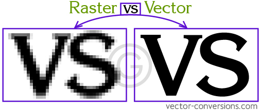

Computer Aided Design (CAD)
CAD was one of the topics that was taught during Digital Fabrication. CAD or Computer Aided Design is used to create 3D or 2D designs from your computer to either prepare for physical creation or to test and measure your idea and see if its viable.
Here are the softwares that was used in learning CAD
- Fusion 360(3D and 2D designing software)
- InkScape (To edit or create 2D designs/ pictures)
Starting off with Fusion 360. Fusion 360 is a POWERFUL software that can be used to create 3D designs and from there, export your designs for 3D printing or Laser cutting(Will be covered in later segments).To demostrate, lets start off by creating something easy like a personalised key-chain.
Firstly, create a new file and create a new design. Since we're making a key-chain, select the XY plane to start sketching. From there, select the 2-point rectangle and draw a rectangle of any size. After creating the sketch, press enter.
As you can see, the drawing that we have made is currently flat and is just 2D, in order to make it 3D, select the sketch that you have made and click E(Shortcut for extrude). From there, drag the arrow that appeared upwards until its of desired thickness,and click enter. This will provide you a 3D rectangle and the basis of your keychain. Next, to personalise your keychain, lets input your name or your initials onto the keychain! Click the top face of the rectangle that you just made and start a new sketch, under the Create section, select Text and select where would you like to place your text. Input your name/initials and do the same as your did for your rectangle.
Next, lets try something a little harder and create a chesspiece. For my trial, I created a King piece. Well obviously, using the same method as the one we used for making the keychain is not going to work as a chesspiece is very circular with different parts that are concaved and potruding out which makes it very hard to create. So inorder to make full use of the capabilities of Fusion 360 we shall use the function of a canvas.So, use google and find a 2D picture of a King piece and download it onto your computer. But before you do anything with the picture, we must make sure that the picture is a vector image.
Pictures/graphics can be classified into 2 different types,Raster and Vector.
Raster
images are composed of pixels. Pixels are the smallest addressable element of a picture represented on a screen. This basically means that raster pictures are formed by small cubes with individual colours. As you zoom in to a raster image, you will see that the outline is not smooth but rather formed by small boxes. Raster images are the most common type of images avaliable to us. The actual size of the raster image will also change the disc space the image takes up
Vector
images are composed of paths. Vector images are made from lines which gives you a smooth and continuous image. Even if you zoom into a vector image, you wont see any pixels or distortion and the image will remain smooth and clear. Vector images also occupies less disc space.

After knowing the difference, lets learn how to convert Raster images to Vector images. Firstly, open up Inkscape!
Learn how to convert Raster to Vector here!
After converting your image to Vector, lets import the image into Fusion 360! Click Insert and Import from computer and put the picture on the XZ plane. Next, start a sketch. Use the Fit point spine function and trace half of the chess piece. Be sure to connect the lines so it forms the shape of the chess piece.
Next, select your sketch, and use the Revolve function . This will form the circular shape of your chess piece. Next use what you have learned form creating the nametag and put on the final touches(the cross) on the chess piece! There you go, this is how you create a chess piece easily! Below are some other trial pieces I did while experimenting with Fusion 360.